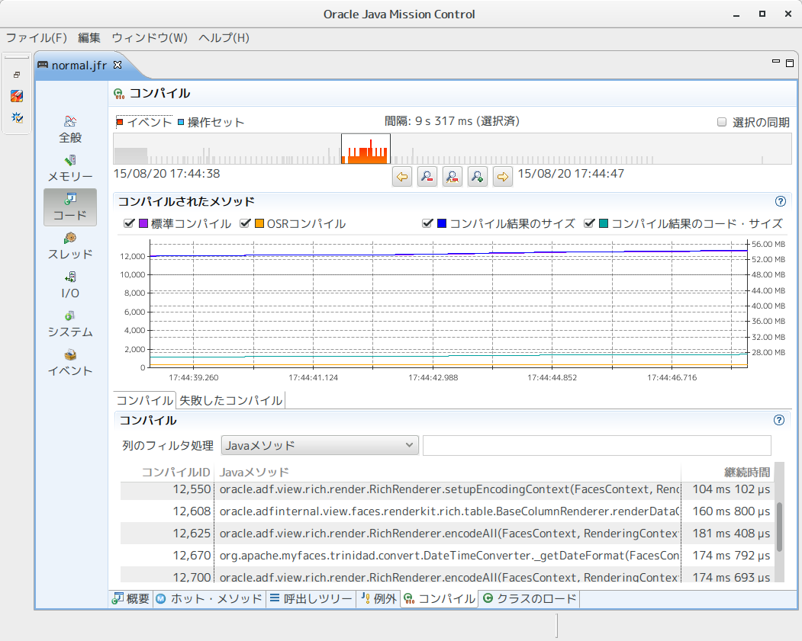
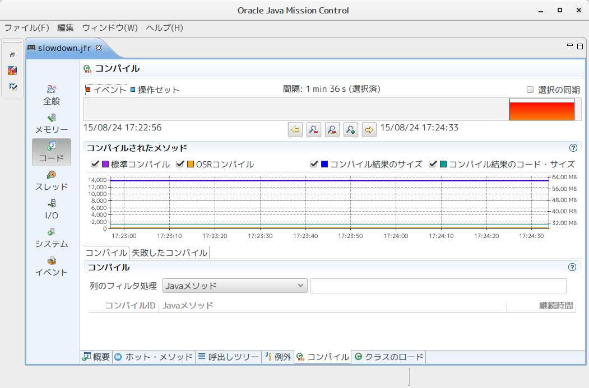
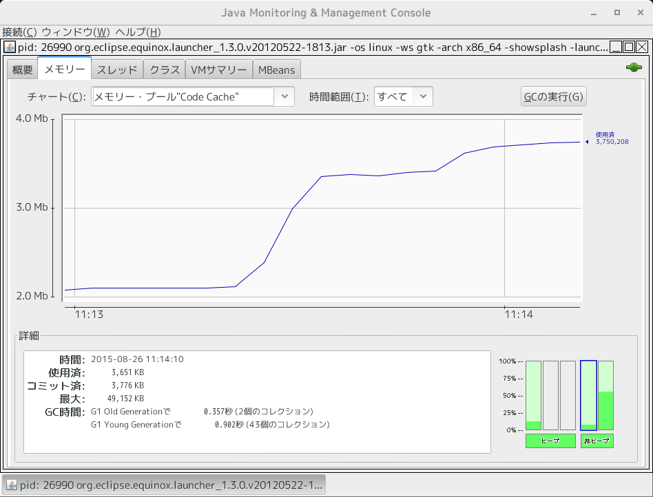

Table of Contents
1 CodeCacheによる性能劣化事例
先日CodeCacheによる性能問題が発生した、原因を突き止めるには時間が掛かりました。 そのわけは
- 全体が遅いではなく、一部処理のみ遅い
- スレッドダンプから遅い箇所の特定が出来ない
- プロファイリングからホットメソットの特定が出来ない
- 性能劣化時間帯に同期化によるロック待ちが発生していない
- 性能劣化時間帯のシステムコールのコストは平常時と変わらない
- 性能劣化時間帯にメジャーGCが起きていない、マイナーGCの時間も正常数値範囲ないである
よく言われているJVM性能に影響する要素を一通り確認しても、問題の特出が出来なかった。
今回の障害ケースは以下のような特徴があります。
- アプリケーションサーバ一定時間運転後、特定画面の処理時間が数十倍伸びる
- アプリケーション再デプロイ後、スローダウン現象が起きやすくなる傾向がある
- 一度性能劣化すると、アプリケーションサーバを再起動しないと回復しない
この現象はメモリリークによるGC時間が伸びるのような性能劣化ケースと似ている。
しかしGCによるスローダウンは波があるはず、かつ特定画面が遅いとは限らないでしょう。
つまり、CodeCacheによる性能劣化は原因を気づきにくい場合があります。
最終的Flight RecorderのJITコンパイラー記録から問題がCodeCacheにあることを推測した。
OpenJDKご使用の場合 -XX:+PrintCompilation JVM起動フラグでJITコンパイルログから同
じことも確認できる。
スローダウン前に取れた記録

性能劣化時間帯で取れた記録

ご覧の通り、性能劣化時間帯にJITコンパイラーが動いていないようだ。 CodeCache領域の使用量を確認すると、空きがないことも確認されました。 ここで問題はCodeCacheが足りないと推測出来るでしょう。ただ単に推測に過ぎないので、 根拠付けるためにテスト用アプリケーションをデプロイしてJITコンパイラーの挙動を確認しました。 やはりJITコンパイラーが動いていないのだ。
2 CodeCacheについて
CodeCacheについてJava Magazineに BEN EVANS さんの記事が分かりやすいと思います。
- Java HotSpot VM コード・キャッシュについて
- Java HotSpot VMにおけるJITコンパイルの概要
- Java HotSpot VMの内部を探る(2): パフォーマンス解析のための統計情報
- JITWatchを使用したJava JITコンパイルの理解
以下は自分のまとめです。
- JITコンパイラーの結果がCodeCacheに格納される
- CodeCacheが一杯になるとJITコンパイラーが停止してしまう
- JITコンパイラーが停止すると性能が劣化する（事例: 本来6秒で終わる処理が40秒かかる）
- アプリを振り返し再デプロイするとCodeCache領域が溢れる可能性がある
- SpringやJPAのような実行時にClassを動的生成するアプリに置いてCodeCache領域を大量に消費する場合がある
- JDK7で階層型コンパイラーを有効化するとCodeCache領域の消費が増加する
- ミドルウェア／アプリケーションサーバのCodeCache領域をチューニングすべき
- ミドルウェア／アプリケーションサーバのCodeCache領域常時監視しておくべき
3 CodeCache使用状況の確認方法
3.1 JVM Printフラグで確認する
| フラグ | 説明 | JDKバージョン |
|---|---|---|
| -XX:+PrintCodeCache | JVM終了時に出力する | JDK 8から利用可能 |
| -XX:+PrintCodeCacheOnCompilation | JITコンパイル動作時に出力する | JDK 8から利用可能 |
OpenJDK8で -XX:+PrintCodeCache フラグの出力サンプル
$ java -XX:+PrintCodeCache -version openjdk version "1.8.0_51" OpenJDK Runtime Environment (build 1.8.0_51-b16) OpenJDK 64-Bit Server VM (build 25.51-b03, mixed mode) CodeCache: size=245760Kb used=1057Kb max_used=1068Kb free=244702Kb bounds [0x00007f79a5000000, 0x00007f79a5270000, 0x00007f79b4000000] total_blobs=220 nmethods=2 adapters=135 compilation: enabled
各項目について
| 項目名 | 値 | 説明 |
|---|---|---|
| size | 245760Kb | CodeCache領域予約サイズ(最大サイズ) |
| used | 1057Kb | 現在の使用量 |
| max_used | 1068Kb | 最高水標(High Water Mark) |
| free | 244702Kb | 未使用分のサイズ |
| bounds | CodeCache領域のメモリアドレス | |
| total_blobs | ★TODO調査 | |
| nmethods | ★TODO調査 | |
| adapters | ★TODO調査 | |
| compilation | enabled | JITコンパイラーの状態 |
sizeの値は-XX:ReservedCodeCacheSizeオプションで指定可能です。compilationの値がJITコンパイラーの状態を示しているため、重要な指標と考えます。
OpenJDK8で -XX:+PrintCodeCacheOnCompilation フラグの出力サンプル
$ java -XX:+PrintCodeCacheOnCompilation -jar sample.jar CodeCache: size=245760Kb used=1022Kb max_used=1031Kb free=244737Kb CodeCache: size=245760Kb used=1056Kb max_used=1065Kb free=244703Kb CodeCache: size=245760Kb used=1060Kb max_used=1070Kb free=244699Kb CodeCache: size=245760Kb used=1067Kb max_used=1072Kb free=244692Kb CodeCache: size=245760Kb used=1069Kb max_used=1072Kb free=244690Kb （中略）
この出力からrunning状態のJVMのCacheCode領域の変化を見ることができる。
TODO: 図形にplotする
3.2 JConsoleからの確認方法
- グラフで確認する メモリータブビュー「メモリー・プール”Code Cache”」チャートからリアルタイムで確認でき る。下部の縦棒グラフに青で囲んでいる部分から空き領域との比例が分かりやすい。 
- MBeanで確認する
3.3 VisualVMからのからの確認方法
JConsoleと同じくMBeanで確認できる、MEMORY POOL VIEW プラグインで視覚的なビューでも確 認が可能です。しかし、MEMORY POOL VIEWプラグインはプラグインセンターから直接ダウンロー ドが出来ず、手動でダウンロードし、インストールが必要となります。
- プラグイン
- CodeCache利用状況
3.4 Java8のNTM(Native Memory Tracking)で確認する
-XX:NativeMemoryTracking=detail でJVMの起動すると、jcmdからNativeメモリの割り当て状
況を追跡することができるようになります。
以下summaryモードの出力に20〜22行がCodeCache割り当ての概要となります。
$ jcmd $JAVA_PID VM.native_memory summary 1|29354: 2| 3|Native Memory Tracking: 4| 5|Total: reserved=1366991KB, committed=347155KB 6| 7|- Java Heap (reserved=1069056KB, committed=102400KB) 8| (mmap: reserved=1069056KB, committed=102400KB) 9| 10|- Class (reserved=661KB, committed=661KB) 11| (classes #5558) 12| (malloc=661KB, #4626) 13| 14|- Thread (reserved=41318KB, committed=41318KB) 15| (thread #40) 16| (stack: reserved=41120KB, committed=41120KB) 17| (malloc=121KB, #167) 18| (arena=77KB, #80) 19| 20|- Code (reserved=50209KB, committed=2825KB) 21| (malloc=289KB, #1084) 22| (mmap: reserved=49920KB, committed=2536KB) 23| 24|- GC (reserved=179288KB, committed=173556KB) 25| (malloc=139596KB, #776) 26| (mmap: reserved=39692KB, committed=33960KB) 27| 28|- Compiler (reserved=130KB, committed=130KB) 29| (malloc=32KB, #68) 30| (arena=98KB, #2) 31| 32|- Internal (reserved=1646KB, committed=1582KB) 33| (malloc=1582KB, #1631) 34| (mmap: reserved=64KB, committed=0KB) 35| 36|- Symbol (reserved=8541KB, committed=8541KB) 37| (malloc=6551KB, #66839) 38| (arena=1990KB, #1) 39| 40|- Memory Tracking (reserved=5169KB, committed=5169KB) 41| (malloc=5169KB, #166) 42| 43|- Tracing (reserved=10436KB, committed=10436KB) 44| (malloc=10436KB, #91) 45| 46|- Pooled Free Chunks (reserved=539KB, committed=539KB) 47| (malloc=539KB)
detailモードに”reserved xxxxxKB for Code”部分がCodeCacheの割り当て詳細となります。
（中略） [0x00007f2691000000 - 0x00007f2694000000] reserved 49152KB for Code from [ReservedSpace::initialize(unsigned long, unsigned long, bool, char*, unsigned long, bool)+0x266] [0x00007f2691000000 - 0x00007f2691270000] committed 2496KB from [VirtualSpace::expand_by(unsigned long, bool)+0x1c9] （中略） [0x00007f26985af000 - 0x00007f269866f000] reserved 768KB for Code from [ReservedSpace::initialize(unsigned long, unsigned long, bool, char*, unsigned long, bool)+0x266] [0x00007f26985af000 - 0x00007f26985b9000] committed 40KB from [VirtualSpace::expand_by(unsigned long, bool)+0x1c9] （中略）
4 CodeCahe溢れた時の出力
通常CodeCahe領域が溢れた時にJVMの標準出力に警告ログが出される。しかしJDK7一部バージョ ンではこのログが出力されない場合があります。
Java HotSpot(TM) Server VM warning: CodeCache is full. Compiler has been disabled. Java HotSpot(TM) Server VM warning: Try increasing the code cache size using -XX:ReservedCodeCacheSize=
事例
5 CodeCahe溢れた時の対応
未完成続く…
以下は未整理のネタ CodeCacheMinimumFreeSpace I2C/C2I adapters 用の予約スペース